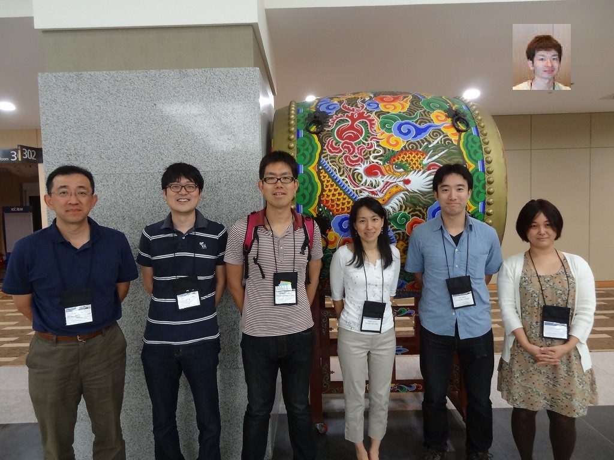

博士課程時代の2008年、米国レッドモンド本社の Microsoft Research でインターンをしたときの日記です。初日のオリエンテーションから研究生活、シアトルでの暮らしや仲間との交流まで、当時のリアルな体験を毎日書き留めた記録。研究の最前線に触れた興奮や、Googleとの比較、異文化生活の驚きなど、博士課程の目線で綴られた「研究者の夏の記録」をまとめています。
(ちなみに上の写真は、Microsoft Research の鈴木久美さんの下でインターンをした先生・学生の、ある学会での集合写真です)
目次
今日は、インターン１日目ということで、NEO(New Employee Orientation)に出席する。このオリエンテーション、インターンのみならず、その週から入社するフルタイム社員も全員参加するもので、時間通りに着いたのにもかかわらず凄い人の数。後で知ったがその人数はおおよそ200人弱。
Microsoftについては、Googleでインターンしているときに、社員の間で「Microsoftに就職すると、最初の日に、Microsoftがいかに素晴らしい会社かを延々と聞かされて洗脳されるらしいよ」という噂がまことにしやかにささやかれていたのが印象深かったのだけれど、来てみて納得。いや、確かに内容はためになるし、雰囲気は全然「洗脳」という感じではなくフランクで楽しいのだけど、なにせ長さがね・・・。朝から午後４時までずっと話を聞いたりビデオを見せられたりしていると、そういう噂を皮肉たっぷりに誰かに話したくなるものだろう。ここは改善の余地あり。
Googleのときは、オリエンテーションはもっと素っ気なかった。ごく最小限のペイパーワークと、会社の案内の後、昼にはメンターの人と会ってランチを食べていた記憶がある。日本からのインターンのシステムがまだ整ってなかったせいもあるかもしれない。（ちなみに今年からGoogle本社でインターンするにはアメリカのほうに直接申し込まなければならないらしいので、体験談でも聞いてみたい。Google Japanで雇われて本社に出張という形を取っていた自分らの代は運が良いのかもしれない）
とはいっても、確かにMicrosoftの福利厚生はすごい。福利厚生の説明のときに、「インターンの人は関係無いから会議室の外に出てダベっててもいいよ」、って言われたにもかかわらず聞いててよかったと思った。ちなみにオリエンテーションの時に「今日一番近くから来た人！」「一番遠くから来た人！」みたいなことを聴衆に聞いていたのだが「日本から」と答えた自分が一番遠かった。この時期は、そもそもインターンの数自体が少なくて、自分みたいに海外から直接来ている人もあまりいない。そしてインターンは全員Research。そのせいでインターンは目立つみたいで、さっそく一緒にランチを食べたりして変な団結力を感じる（笑）
時差と気温差のダブルパンチにやられて体調が思わしく無いので、オリエンテーションが終わってhisami-sさんに連絡した後そそくさと帰ってくる。今回の滞在、そもそも英語圏ということもあるし、前アメリカで２ヶ月住んでたこともあるので、異国の地という感じが全然しなく、むしろアメリカで「普通に下宿している」という感じ。スーパーで買い出しに行って自炊してたりとか。こういう環境のほうが逆にゆっくりと研究に集中できて良いかもしれない。
帰ってからアパートの管理会社に電話して「もうここに住みます」という旨を伝えると、前に住む予定だったアパートの人が勝手に滞在を３ヶ月ほど延長した！らしく、そもそもこのアパートしか選択肢が無いことを知らされる。それならそうと連絡ぐらいくれよ、２日間迷った自分はなんだよ、と思ったのだが、そういえばここは、自分から自発的にアクションを起こさないと何も動かない国アメリカだったなと思い出して納得する。
2008/4/23
この調子で「マイクロソフトでの８４日目」まで毎日日記を書くのかと思うと怖くなってきたまっとんですこんばんは。ちなみにインターンは１２週間＋中休み２週間。
今日はオリエンテーションの２日目。また朝から社員の人の話を聞いたりビデオを見たり。会社の知財関係の話なんだけど、この辺はGoogleの時に体にたたき込まれたせいかけっこう退屈。途中で意識が飛びそうになる・・・。
オリエンテーション後は、建物に入るためのカードキーをもらい、他のインターンの人たちと合流してシャトルバスを頼んで自分らの建物へ。マイクロソフトのキャンバスはあまりにも巨大なため、建物から建物まで歩いたら平気で何十分もかかってしまう可能性があるので、受付に言うと専属のタクシーみたいなのをすぐに手配してくれる。あまりにも巨大なため、初日に空港からタクシーで高速下りたときに「マイクロソフトはどこなんですか？」って運ちゃんに聞いたら「いやいや、もうマイクロソフトのど真ん中にいるがな！」って言われたぐらい。名古屋大学の東山キャンパスを知ってる人なら、東山キャンパス（山の上を含む）～中京大学～南山大学をすべて含んでぐるっと囲むような領域を考えてもらえばその大きさがイメージしやすい。ローカルな例えでごめんなさい。東京ドームだと何個分だろう。
自分の席に行ってＰＣ等を簡単に確認した後に、hisami-sさんに連れられてラボの人たちに紹介してもらう。いろんな人がいてみんな気さくな感じで良かったのだが、ＭＴに関わってる人が多い印象。自分の研究室では少なくともＳＭＴやってる人（やってた人）が誰もいないので、話についていけるか心配だ。ちなみに自分は今年来た最初のインターンらしく、部屋も独占状態で使える。５月になったら少しずつ増えてくるそうな。
Microsoftの社員の特典は実に色々ある（多すぎて覚えられない）のだけれど、一つはこのあたりからシアトルにかけてのバスに全て無料で乗れること。早速受付でフリーパスを発行してもらったので、バスにタダ乗りして帰ってくる。異国の地でバスに乗るのは苦手なんだけど（そもそも日本でもほとんど乗らない）、路線も割とわかりやすいしこれからお世話になりそう。
本当はＰＣの環境（ハード＋ソフト）とか、インターンのプロジェクトとか、肝心なことをものすごく語りたい（そしてたぶん読者の要望にも合ってる）んだが、NDAに抵触しそうでうかつに書けないのがもどかしいところ。でも、ＰＣ環境はすごくいいですよ。しかもインターンに割り当てられるＰＣのスペックが高いので、毎年インターンが去ってから社員の間で争奪戦になるそうな（笑）
2008/4/24
マイクロソフトの社内で堂々とiPod Touchを愛用しているまっとんですこんばんは。リサーチだから良いけど本社のほうなら袋だたきに遭うこと必死。
だんだんとスタートダッシュ時のドタバタが片付き、少しずつ環境が整ってくるころ。初めて午前中に何も用事が無いので早めに行ってどんどん作業を進めようと思うが、昨日遅く寝たせいか寝坊する。日本とやりとりするのは夜しか時間がないんだよね・・・。
今日は海外から直接来ているインターンのためにオリエンテーションを実施してくれた。といっても、今週入った海外組は、ブラジルからの２人と自分の３人しかいないので、「また俺らか」という感じで合流。オリエンテーションといってもかなりフランクな感じで、外部の会社の中年女性が、アメリカでの生活に関すること（SSNや自動車免許の取り方、銀行口座の開き方）やら、周辺地域のローカル情報（病院やショッピングセンターなどなど）について優しくユーモアたっぷりに教えてくれた後、車に乗せて街中をまわってくれる。銀行口座やらSSNなんて、ものすごく役に立つ（というか、給料を振り込んでもらうのに必須）のだけれども、他にはけっこう知ってる情報とかもあったりして（ようこそアメリカへ！みたいなガイドブックまでくれる）過保護な印象。このへん、生活に関しては基本的に放置プレイなGoogleのインターンとはえらい違いだ。どちらが良いかは好みの問題もあると思うけど。
オリエンテーション後時間ができたので、中休みに日本に帰るためのTravelEndorsement（旅行許可）を責任者のところにもらいに行く。別のビルにオフィスがあるため、余裕を持って出かけたのに、移動に時間がかかった上、さらに迷ってしまう。自分が方向音痴なため建物の中でも迷うし、この巨大なキャンパス内で完全に迷わなくなるには３ヶ月ぐらいかかるんじゃないか。
2008/4/25
今日からタイトルつけます。アーカイブに○○日目って数字だけが並んだら、初めてアクセスした人は、全部読むか全部読まないか、ランダムに読むかの選択肢しかないことに気づいたので。
この日記は１日遅れで、つまり、平日家に帰ってから昨日のことを思い出しながら書いているのだが、（これにはちゃんとした理由があって、記憶力が極端に悪い自分は、昨日のことを思い出しながら書くと復習になるし脳トレにも良いから）日本は時差のせいでそもそも１日遅れみたいなもので、さらに昨日帰ってきて疲れて寝てしまったので日本から見たら３日遅れの日記を書いているまっとんですこんばんは。
今日はミーティングに出させてもらう。一つはReading Groupというもので、日本で言うと輪講みたいなもの。誰か発表者がネタ（論文）を用意してきて発表して、参加者に解説した後（というか解説しているそばから）みんなで議論をするというもので、そこは大学でやってるのとそう変わりない。決定的に違うのは、そもそも時間が短いことと、内容が濃いこと。会議室の予約がそもそも１時間しか取ってないくて、終わると別のグループの人たちが来てしまうので、それまでに発表＋議論を終えなければならない。ウチの研究室だと、ミーティングの開始時間だけが決めてあって、あとは雑談を交えながら（というか半分ぐらい雑談）だ～らだらやってるのだけれど、ここはＭＳＲを見習ってせめて終わりの時間だけでも決めるべきかなと思った。あとは内容の濃さで、学会発表の後の質疑応答の時間を５倍ぐらいに濃縮したものを考えてもらうとわかりやすい。質疑応答の時間で、たまに質問者＋発表者＋別の質問者がエキサイトして議論を始めることがよくあるが、あれがずっと続いている状態。
二つめに出させてもらったのは普通のミーティングなのだけれど、こちらも今回は外部グループの発表者がいて、ＮＬＰに関係ありそうなことを語りに来てくれるという感じ。こちらも発表しているそばから濃厚な議論が繰り広げられていく。
正直、英語の問題もあって、この議論に「適切に」参加していくのはかなり難しいと思った。昔Googleインターン時の同期が、「日本で英語がダントツにできても、アメリカでは英語がダントツにできない部類に入るのでかなりつらい」ということを漏らしていたのだけれど、それをそのまま体感している。１対１で話している時には全然問題ないのだけれども。
ということで、自分がGoogleでインターンしてたときよりも英語レベルはけっこう上達してるにもかかわらず、かなり大変だと感じているので、もうすこし参加者に求める英語レベルは高くしてもいいんじゃないかと思った。面接でグループディスカッションでもさせるとかも良いかもしれない（でもそうするとたぶん日本人は誰も通らないｗ）
まあ、マーフィーの法則に「経験は、それを必要とした後ではじめて手に入るものである」という名言があって（初Ｈの時を思い出してもらうと分かりやすい）、自分はこの言葉が大好きで座右の銘としているのだが、それを心に留めながら精進する毎日である。
2008/4/27
なんか単なる「大学院生アメリカ生活日記」みたいになってきたけど気にしないまっとんですこんばんは。
昨日、本当は「インターンのみんなでロッククライミングをして交流しよう！」的なイベントがあるはずだったのに、人数が少なかったのか突然中止になった。上司のhisami-sさんがロッククライミング好きで色々教えてくれたりしてちょっと楽しみにしてたのだが、次回待ち。ちなみに次回は「インターンのみんなでガラス細工を作って交流しよう！」的なイベントらしく、ＭＳに限らずアメリカでは、こういう「小学生かおまえら」的なイベントを、親睦を深めるためにわざわざいい年こいた研究者とか大学院生にやらせるのはよくあることらしい。
ということで時間ができたので銀行口座を作りに行ってくる。会社の近くの支店の窓口に行って、いろいろ個人情報を聞かれてすぐに完了。Visaのデビットカードも発行してもらえた。給料振込ももちろん重要だが、アメリカに口座を持ってると、外国の証券会社等に振り込んで、直接アメリカ株とかＥＴＦが買えたりするので楽しみ。もちろんインターン中はそんなお金を動かしているヒマなんて無いのだけれども。
ところで行ってきた銀行とか不動産屋とかで対応してくれる人、「マイクロソフトで働いている」と言うと突然態度が良くなる気がする・・・。そもそもこの辺の会社の大部分がマイクロソフトに寄生（言葉は悪いが）しているようなもので、会社単位で斡旋とか契約してるためだろうと思うのだけれども、基本的に「無料のサービス精神」というものが店の人に無いアメリカではちょっと拍子抜けである。着いてから色々と交渉したり問い合わせたりしてばかりいたので、だんだんとそれを楽しみつつあったのに・・・。
今日はもう少し時間があったので、街中まで出てプリペイド携帯を買ってくる。インターン中ほとんど使わないと思ったのだけれども、週末に人と会う用事があって、アメリカの携帯がどんなものか興味があったので試してみることにした。こちらはなんと個人情報は名前しか聞かれなかった。アメリカでプリペイド買うのは簡単だと聞いていたのだがこんなに簡単だとは。買ったのはT-MobileのNokia 2610。日本のと操作方法の勝手が違って分かりにくいのだが、確かに英文メールは若干入力しやすい。
携帯で打つ英文メールって、いつも思うのだけれども、同じ内容を伝えるのに日本語よりも遙かに多いキーストロークが必要な気がする。それだから頭字語(acronym)とか略語(abbreviation)が発達したのだと思うが、ここはハードウェア的に（そしてソフトウェア的にも）なんとかすべきだと思った。それだからBlackBerryみたいなフルキーボードモデルが日本よりもポピュラーなのかもしれない。
2008/4/28
初めての週末なので早速シアトル散策に出かけてみた。レッドモンドとシアトル間はバスが頻繁に出ていて、しかも（前書いたように）会社支給のフリーパスで乗れる。所要時間もたった３０分。
SharedTalkで知り合った、シアトル近郊在住の Matt と合流してダウンタウンの有名どころ(Pike Place MarketやSafeco Fieldなど)をまわる。でも、観光はいつでも来れるし、ということで、軽くまわった後、ワシントン大学(UW)で開催されている Master Class なるものを見に行く。このUWの音楽科が主催するイベント、音楽科の学生が演奏して、それに対して有名な先生が指導をするところを一般公開して誰でも見にこられるようにしたもので、Mattと自分はお互いに音楽が好きで２人ともベースを弾くので誘ってくれたものだった。ホールで反響するせいか、先生の言ってることが聞き取りにくい。研究に比べて、音楽のことを英語で語る機会が圧倒的に少ないのも原因かも。
その後は、同僚が教えてくれた、シアトルにある最大規模のベース専門店”Bass Northwest”に行く。期待して行った割にはそれほど品揃えがあるわけではなかった(大須コメ兵の楽器売り場ぐらい)。でもクオリティは高いものが多く、５弦のフレットレスがけっこう揃えてあるのには驚いた。値段も高いけど給料入ったら欲しいかも・・・。
そんな感じでシアトル散策を終えて夜アパートに帰ると、中から「誰だー？」的な声がするので仰天する。それはこっちのセリフだ。階段の上からひょっこり顔をあらわしたのは見知らぬ青年。しばらく話してやっと状況を理解する。彼もMSRのインターンで来週開始なのだが、どこで間違ったのか、自分と同じで希望のアパートではなくここに割り当てられたということ。たしかにベッドルームが２つあるこんな大きいアパート（というか、これはもはや「家」に近い）に１人で住むのはおかしくて、ひょっとしたらそのうち誰か来てシェアすることになるかもね、という話だったのだが、その事態がけっこう早くやってきたらしい。世の中甘くないなぁ。
ちなみに彼、ドイツから来ていて名前はAlexというのだが、一緒にインターンを始めたブラジル人２人の名前も Alexandro と Alexander というので(いまだにどちらか分からなくなる。マナカナじゃあるまいし)、また周りに Alex が１人増えたことになる。これも何かの縁なのかもしれない。
ということで、希望と違うところに飛ばされたことに腹を立ててばかりでは始まらないので、なんとかしてやっていくしかない。でも、なかなか気さくで良いやつでほっとする。ルームシェアなんて生まれて初めてだけど、異なる国からきた２人が異国の地であれこれ悩んだり相談したりしながら生活していくのはけっこう面白い。２人でスーパー行って「おいなんでアメリカはこんなに大量の種類のベーグルがあるんだ」「でもこれどうやって食べようか？」「よくわからんがトースターあるから焼いてみるかｗｗ」みたいな。家に帰ったら独りで無いのも異国生活では心強い。
ルームメイトといえば、ACLでも会議中の宿泊用にルームメイトの紹介サービスを提供してくれてるので、こういう偶然の出会いを楽しみつつ宿泊費を浮かすチャンスかもしれない。自分の場合、宿泊費は日当で出るし、ウチの研究室では部屋をシェアする習慣が無いので助かる。
あと、ACL SRWのほうでも、Co-Chairの Ebru Arisoy がルームメイトのマッチングを(SRW参加者内で)斡旋してくれてるので、さらに濃い交流ができるかもしれない。現時点で参加者＋Co-Chairsの中から(自分を含めて)４件希望が来てるらしく、SRWの規模を考えればみんなけっこう積極的だなと思う。ただ、国際会議中って、他の研究者と飲んだり観光に行ったりしてクタクタになって帰ってきてそのままベッドに倒れ込むのが筋なので、部屋でまで気を張って、会議が終わるころには疲れ切ってしまうかも・・・。
2008/4/29
マイクロソフトのカフェテリアに行って、ついつい「バイキングだ～！」って取りすぎてしまい、レジのところでそういえば有料だったことに気づくまっとんですこんばんは。Googleの功罪は良くも悪くも大きいと思う。
今日はミーティング的なものが何もないので朝からゴリゴリと実装を進めていく。扱うデータが大きいので、スクリプト言語(Ruby)に早々に見切りをつけてVisual Studio＋C#に切り替える。非常にナイーブだけどベースライン的なものが動くようになって、やっぱり手を動かして実装しながら、実データをいじくりまわしてあーだこーだ考えたり相談しながら進めていくのはものすごく楽しい。これこそ研究の醍醐味だと思う。
で、飲み物の話。Google(本社)では、飲み物に加えてスナックと食事が全て無料で、しかも料理は一流シェフによる、有機素材を使った絶品であることはもはや有名な話だが、マイクロソフトでもドリンクは無料なんですね。ただ、実際に無料で飲めるドリンクは、コーラとかスプライトとかDr. PepperとかRoot Beerとか健康に悪い系が多くて、それを避けると小さい缶の100%ジュースとか、Talking Rainという甘みの無い炭酸飲料しか選択肢がない。
Googleでインターンしてたころ、Naked というとても美味しい生ジュース（？）がどれだけでも無料で飲めることに感動したのだが、この”Naked”、近所のスーパーにも売っているんだけど、買うと一本＄３とか楽勝にかかってしまうので、無料でなければとても買って飲もうという気にならない。この”Naked”以外にも、Googleでは実に色んな種類のジュースが無料で飲めるので、「Googleで無料で飲めるドリンク」の完全なサブセットになっている「マイクロソフトで無料で飲めるドリンク」はどうしても見劣りがしてしまうのが残念なところ。それでも、スターバックス・ブランドのコーヒーマシンはあるし、そもそも全て無料でドリンクを飲めること自体にどれだけ助けられてるか分からないので、贅沢言うべきではないのかもしれない。
2008/4/30
インターンのプロジェクトに費やす時間が増えるにしたがって、日記に書くこと（というか書けること）が少なくなってくのがもどかしいところですね。
今日はACL SRWのカメラレディに提出した原稿をアップロードしてみた。人に説明するときにリンク送るだけで良いので便利なことと、著作権関係がどうやら大丈夫らしいと聞いたので。アップした後に、Co-Chairから「サイズがUS Letterになってないよ！」というフォーマットに関するお叱りのメールが来ていたことに気づいたのでぽちぽちと直して再提出。数式がはみ出してたりする箇所とかけっこう事細かに指示される。
今日は同時に、インターンの中休みに日本に帰るためのシアトル→名古屋便を仕事が終わってからごそごそと予約。今回のACLの出張、日本からオハイオに行って、帰りはインターンの続きをやるためにシアトルに戻るという変則スケジュールなので、出張費が大学からも、マイクロソフトからももちろん出ずに困っていたのだが、ACL SRWには出張費補助の制度があるらしくて、学会参加費、ホテル代、航空券代など、かかった費用を領収書付きで申告すると、その一部を補助してくれるということだ。どうせ大した額ではないと期待してなかったのだが、どうやら自分の場合（というかひょっとして参加者全員？）ほぼ全額が返ってくるようなのでほっと胸をなで下ろす。ルームメイト紹介サービスといい、この費用負担制度といい、とても良いサービスなのでもっと大々的にCFPに書いて宣伝しても良いのでは？
ところで、インターンでやることのテーマ、大学でやってることと良い具合に異なっているので、理論と実装の両面で色々と新しいことを覚えられてとても楽しい。人は適度なストレスがかかるときに最善のパフォーマンスを発揮できるとはよく言われたものだけど、良い具合にそのパフォーマンスカーブの極大点に乗っかってる気がする。
同時に、ここでインターンしてると、企業ならではのパワー（規模の力）を実感することが多い。「こういうことやりたいんだけど誰か実装した人いないか」「こういうデータ使いたいんだけどどっかにないか」的なことをちょっと聞いたりすると、すぐさま何らかのモノが出てくるか、すぐにもっと詳しい人のところに繋がるのがすごい。大学でも、規模の大きい研究室では当たり前なのかもしれないけど、少なくとも自分の研究室ではそうではないし、大学では「力」よりも「頭」を使ってる（というか、頭もあまり使ってないかも・・・。）ほうが多いので新鮮だ。もちろん、ここでも頭はおそらく大学以上に使ってるんだけれども、それにパワー（力）が伴っていてとても良い環境だと思う。Googleでインターンしてた時にも思ったのだが、この環境をそのままごっそりと日本に持って帰って研究できたらどんなに良いことだろう。日本の研究室で、自然言語処理の研究をやるために、それではじゃあデータが必要だね、ってなって、じゃあクローラーを書き始めて、スクレイピングして、なんて一人やってる内にどんどんと追い抜かれていくのは目に見えてるな。
2008/5/2
ついに日記の更新が週１になってしまったまっとんですこんばんは。充実したインターン生活を過ごしてます。けっこう日本食たべなくても人間って生きていけるもんですね。
給料日
4/30はインターンの初給料日。最初の給料日までに銀行振込の手続きが間に合わなかった（というか、タイミングの問題で間に合わせるにはインターン開始した日の翌日の５時までに手続きしなければならないんだよね・・・）ので、小切手をもらいに受け付けへ行ってくる。小切手なんて、本物を見たことも、目の前でみのもんたが破ってくれたこともなかったのでちょっと感動したけど、そのまま銀行に預け入れに行ってきた。給料の額はよく人に聞かれるのだけど、あまりにありえない額なので親にしか話してない。それでも結局税金とアパート代で色々引かれて、まぁこんなところか、というところで落ち着く。Googleのインターンと比べたら “comparable” かな。どっちにしろ大学院生のもらえる給料としてはありえない額なのには変わりない。
SSN
SSN(Social Security Number; 社会保障番号)の申請に事務所まで行ってくる。SSNは米国で給料をもらうのに必要で、ほぼ個人IDとして用いられてるので必須。最初窓口のおねえさんに「大学側はこの仕事について知ってるの？」とか「大学側からの書類ある？」とか聞かれて、どうも話がかみ合わないなぁと思ってたら、彼女がビザをF1だと勘違いしてたもよう。確かにパスポートに書き殴られた字はJかFか判別不能だった。気づいてからは手続きは和やか済む。ついでに Bellevue のダウンタウンあたりを散策して帰ってくる。
デビットカードとiTunesビデオレンタル
銀行口座を作ったときにVisaのデビットカードを発行してもらえたんだけど、これはVisaカードが使えるところならほぼクレジットカードと同等に使えるので便利。iTunes StoreのUS版、Billing Addressがアメリカ国内のクレジットカードしか登録できないので、日本国内からは指をくわえて見てるしかなかったんだよね。早速登録できたので最近はじまった映画レンタルサービスを使ってみる。確かに便利なんだけど、PC内に残しておこうがiPodに転送しようが、視聴開始から24時間きっかりで視聴できなくなるので、「平日の空いた時間に細切れに見る」という使い方はできないのがちょっと残念。あとClosed Caption付きのものがほとんど無いので素の英語力が試される。
図書館
住んでるアパートのすぐ裏に Redmond Regional Library があるので、週末などに論文書きなど日本の作業を進めたいときにちょくちょく利用してる。無線LANも完備だし、公共の図書館にしてはけっこう静かなので良い感じ。学部生のせいで年々ひどくなってるウチの大学の図書館より良い感じ。
この前、ボランティア主催で「ESL Talk Meeting」なる会（アメリカに住んでる外国人で英語力を上達させたい人のためのトークグループ）が図書館で開かれてたので顔を出してみた。会自体は、自己紹介、ゲーム、ディベートなど、ごく普通のESL的な流れで楽しかったのだけれども、やはりインド人のよく喋る具合はハンパ無い。研究室の先生がいつも話してるけど、国際学会の質疑応答で「インド人を黙らせて、日本人にしゃべらせるのは良い座長だ」とかいう名言？があるらしくて、その構図がここにもある。ちなみに参加した１０人ぐらいのうち３人がマイクロソフト関係者だった。このあたりの地域では、犬も歩けばマイクロソフトの社員に当たると言われてるとかいないとかで、地域の小学校で「お父さんのおしごとは何かな？」という質問自体が意味をなさない、とよくジョークにされてるそうな。
2008/5/8
ドイツ料理
金曜、家に帰ってくるなりルームメイトの Alex が、「ごめん！スティック壊しちゃった！」としきりに謝ってくる。自分はまだ杖がなくても２足歩行できるのにおかしいな、と思ってたら、何のことはない「箸(chopstick)」のことだった。食洗機に入れるときにつっかえて折れてしまったみたい。別に高いもんでもないし気にしなくていいよ、と言ってみるものの、上司からもらった和食キット(MSRのインターンに代々伝わるもので、炊飯器とかしゃもじとかが含まれる。ちなみに初代はsekine先生)ということを知っているので、余計に申し訳なさそうにしている。
罪滅ぼし、ということで、なんと土曜の夜にドイツ料理を振る舞ってくれることになった。ちょうど金曜のランチでドイツのソーセージのことが話題になったので振ってみたからかもしれない(催促はしてない)。サワークリームで和えたサラダと、じゃがいも、ソーセージをメインとしたのオーソドックスなドイツ料理を２人で食べる。もちろん理系男子の作る料理なのでお世辞にもご馳走とは言えないけど、普段何食べてるかとかお互いに分かっておもしろい。ドイツ人だからって毎日こんなん食べてるわけじゃない、と弁明してたけど、毎日観察してるとやはりソーセージとじゃがいも率は異様に高い（笑）
ということで、外国人とルームシェアするのは意外に楽しいので、味をしめて日本に戻った後でもやってみるかもしれない。もちろん成功の是非は相性にかかっているので一般にオススメはできないけど。なんだかんだで毎日けっこう喋るので、日常生活に関する英語の練習にもなって良い感じ。（でもトイレの「すっぽん」だけはやはり何て言うかお互いに分からなかった。）
ガラス細工
MSRインターン向けの初イベント、Redmond市内のガラス工場にみんなで行ってガラス細工を体験する。細工自体は何も難しいことはなくて、ほとんど講師の人が手取り足取り教えてくれるので、自分らは色をつけたり、吹いたりと一番オイシイところだけを体験する。ぼちぼち５月も中旬なのでインターンも増えてきて、新しく見かけたインターン何人かと話す。でもアメリカ移民といえばお決まりのインド人と中国人のインターンをこれまでほとんど見かけないので少し妙なかんじ。人種も白人だらけだ。次は Ice Cream Social という、みんなで集まってひたすらアイスクリームを食べまくるというイベントがある。実はこのイベント、Googleでインターンしてたときにもあったのだけど(業者が巡業してるのかも)、みんなアイスクリームをもらってきて自分の席でひたすらほおばっていたりしてあんまりSocialではなかった記憶がある。
日常生活
毎日ベーグル食べて、Tully’s飲んで、Oprah見てCar talk聞いてSADについて心配しながらVeriluxの品定めするすっかりアメリカナイズされた生活を送ってます。
特にオススメなのが Car Talkで、前から存在は知っていたのだけど、先日、日本人グループでランチ食べたときに話題に上ってから聞いてみたらハマってしまった。TomとRayの２人兄弟が、リスナーから電話でかかってくる車の悩みに答える、ただそれだけの番組なんだけど、「ウチのダンナがウインカーを出したがらないんですが」とか「車が崖から落ちそうになった」とか、車を修理する前に頭を修理したほうがいいんじゃね？的なおもいっきり電話と、それに答える兄弟のトークが面白い１時間番組。もちろん「車から異音がする」とか「パワステがおかしい」みたいな真面目な相談もある。Podcastで聞けるのでオススメです。
そういえば「Tully’s」は日本で「タリーズ」なので、てっきりIPAで言うお山の三角の「ァ」だとずっと思ってたら、英語での発音は「トゥリーズ」で、bullyと韻を踏むらしい。まぁ、こういう transliteration のバリエーションが(特に日本の)NLP屋さんを食わせてくれるので文句は言ってられないけれども。
お仕事
なんかこう書くとまったく仕事をしていないような感じだけど、たしかに今週はあんまり進んでいないかも・・・。イベントが多かったのと、２週目でベースラインの実装が意外に早くできたので少し油断していたかもしれない。それでも大学の研究室で研究している時よりははるかに短い時間しか仕事をしていないのに（平日オンリーで朝９時～夜８時とか）はるかに早く、効率良く研究が進むこの環境は驚異だと思う。これはたぶん「人」の要因が一番大きくて（特に上司のhisami-sさんのお力添え）、研究や実装でちょっと行き詰まったりしたらその辺の人つかまえて相談なりすればすぐに何らかの解決策が出てくる。
ウチの研究室では、上司（先生）と研究のことを話すのは週１がいいところだけど、ここではそれをずっと10倍ぐらいに濃縮した感じで、朝に相談した内容を昼に実装して夕方報告した後に夜に修正するとかいうペース。前に書いたようにミーティングも「濃く短い」し、日本に帰ったらまたあのゆったりとした日常に戻るのかと思うとちょっと寂しい気もする。
2008/5/13
研究所の内部
今週は、Ice Cream Social という、MSRのインターンで集まってアイスクリームを食べまくろうというイベントがあったのだけど、結局行かずに終わってしまった。というのも、同僚のchris-qと、たまたま興味があって読んでる論文が同じでそこに書いてある証明がどうしても納得いかなかったのでホワイトボードに書き殴りながら相談してたらいつのまにか終わってたという感じ。イベントも割と少なく平和な週。
MSRの研究者には、基本的に個室が割り当てられる。てっきりキュービクルだと思ってた自分はまずそこでびっくりしたのだが（もちろんインターンはキュービクル）、それぞれの個室には必ずホワイトボードが壁に埋め込んであって、よく人の個室を訪ねたり訪ねられたりした時に議論がエキサイトするとそのホワイトボードに式や例文を書いたりし始める。自分のいるインターン部屋にも１つあって、ちょっと大きめの問題を解く時など、紙ではスペースが足らない時によく使わせてもらっているが、こういう小さいところがけっこう生産性に影響を与えるもんだなと思う。
それに加え、マイクロキッチンの近くなど、３～４人で集まってダベることのできるスペースが研究所の内部には随所にあって、そのスペースの近くにも、マーカーで自由に書くことのできるガラスの仕切りが配置してあるので、証明やらモデルの式やらが落書きやらが自由に書き殴ってある。Σやら∫やらが踊っていかにも研究所、的な雰囲気を醸し出しているのが良い感じ。
インターンシップ
アメリカに来てから「アメリカは初めて？」とか「企業でインターンするのは初めて？」とか聞かれることが多いので、その度に、「いや実は前に一度・・・」といってGoogleのインターンの話を切り出すとたいてい興味を持ってもらえる（が、話すこっちは気を遣う）。プロジェクトの事は話せないので、たいていは無料の社食とか社内の遊び道具とかの話でお茶を濁すことになるんだけど、Googleのそういう部分はもうだいたい知られちゃってるので歯がゆい感じ。 先日ランチでその話になったときに、３年前にlucy-vの下でインターンしていた Rion Snow (ACL2006でBest Paper受賞)の話題が出た。彼は３年前にMSRでインターンした後、翌年Googleで、その翌年Powersetで、というように毎年インターンを渡り歩いてるそうで、今年はどこ行くんだろうね？という話。学生が複数の企業でインターンするのが日本よりもポピュラーなアメリカでさえも、これだけ渡り歩いてるとネタになるみたい。
MSRに来てからというもの、これだけ良い環境なら、Ｄを１年伸ばしてでも来る価値があるなと思っているので、少しでも興味のある人にはぜひオススメ。さらにＭやＤの最終学年に近づくほどインターンに来にくくなるので、動くなら早めのほうが吉ですよ。
研究
週の途中で、自分のやりたかった提案手法を、既に、しかもエレガントに実装して発表してしまってる論文を発見してしまう。研究につきものとはいえこの時の脱力感は何とも言えない。メンターのhisami-sさんも、逆によかった、さらに上を行く手法を考えよっか、みたいなスタンスでいるので、結局丸一日論文を読みまくってうんうん考えた挙げ句に異なるアプローチを思いつく。結果らしきものもぼちぼち出てきて、４週目でこれだけ進んでるのはけっこう早いほうらしいという話を聞いて少し安心。中にはインターン期間中にモデルを考えるところまでで期間が終わってしまって、後からメンターの人がしょうがなく実験を進めたりするケースもあるんだとか。
まだインターンの少ない４月から始めるという時間差が功を奏したのだが、そろそろ５月なのでインターンも増えてきて、ひどい流量という噂のインターン用のメーリングリストに来るメールの量がハンパ無くなってきた。流量を増やしてるのはMSRではなく本社のほうのインターンなんだけど、毎週どこかで「ゲーム大会しよう」「週末遊びいこう」「サッカーチーム組もう」みたいな話で盛り上がってて、みんなちゃんと仕事してんのか不思議になるくらいだ。
2008/5/20
今週から、同じ自然言語処理グループでインターンすることになったSara(from Mexico)が仲間に加わった。一緒のキュービクルに配属される。だいたいインターンに来て最初につまずくところは同じなので、研究所の中のこととかツールの使い方とかを教えていると、自分も５週間目だけだけど少しだけ先輩になった気がして複雑な心境である。ついこの前まで「まだ来て１週目なんですよ」「まだ２週目なんですよ」って言ってたのが、「もうすぐ半分ですよ」に変わった。これは焦る。すぐ隣のグループにも中国人のインターンが２人増えて、１人で研究にずっと集中できた４月と比べてだいぶ賑やかになってきた。これはこれで楽しいけど、研究に集中する時間を意識的に確保しないとな。
MSRのインターンで集まってランチ食べない？的なお誘いがMLにちょくちょく流れているので顔を出しに行ってくる。MSRのインターンはだいたい Ph.D の学生が多くて、本社のインターンより平均年齢も高いし落ち着いてるのでまったり話せて良い感じ。ちなみにこういう多人数を相手にしたメールに対して、MLやCC に入っている人のアドレスをToやCCに加えずに、本人だけに返信することを「little-”r”」するというらしい。「Please little-”r” me.」とか動詞として使う。反対語は「Big-”R”」だそうだ(”r”はreplyから来ている)。
ちなみにメール繋がりで、たくさんの人が見てるMLとかで、質問に対して誰かが「Just google it.(ググってみれば)」とか言うとすかさず横から「Did you mean “Just ‘live search’ it”?(ライブサーチのことかな？)」とかツッコミが入るのがさすがMSという感じがする。でも申し訳ないけどGoogleもけっこう使ってて(無いと死んじゃう)、みんながみんなLive Searchでググっているわけでは全然ない。きっとYahoo!にしても同じだと思う。
日本人インターン
水曜は、プロダクトチームの日本人の方とメンターのhisamiさんと中華料理屋へランチに。今抱えている問題が非常に似てて、今回のプロジェクトで良い感じにプロダクトチームの方とも絡めそうなので興味深い話ができた。その時に「日本人のインターン全然見ないね」的な話になったのだが、日本人でMSRへインターンに来たのは去年のmamoru-kさんが最初だとばかり思っていたら、その前にTeddyで有名な五十嵐先生がMSRにインターンで来てたことがあるらしい。まだ掘り返したら出てくるかも。しかしMSRにインターンで来る人はみんなクオリティが高すぎて焦る。
天候がおかしい
これまで日本の冬並みに寒い天気がずっと続いてたと思ったら、先週末は突然気温が上がって、８０°Fぐらいの暑い日になる。天気予報によるとこの時期にしては記録的な暑さらしくて、インターン期間も半分終わらない間に、雪が降るような記録的な寒さと、夏服でちょうど良いぐらいの記録的な暑さを体験できた自分は運が良いのか悪いのかよく分からない。
こっちに来てから人と天気の話をすることが比較的多いのだけど、これは別に初対面の人だから無難な天候の話題で、とかいう表面的は話ではなくて、本当に天候がネタになるほど今年の天気はおかしい。シアトルはずっと雨が降ってることで有名だけど、割と変化の少ない天候でタチは良い(ネブラスカ出身の楽器屋のにーちゃん談)、という話だったのだが、今年はそうも簡単ではないようだ。
暖炉
ある日アパートに帰ってくると、ルームメイトのAlexが暖炉の前で格闘している。このアパートに暖炉がついてたことすら忘れかけてた自分（というか、暖炉ってどういうタイミングで、どういうシチュエーションで使えばいいかわからない日本人の自分）だけど、散歩して拾ってきたぶっとい薪で必死に火をつけようとしているので、無理だと思いながらも参戦する。このアパートには他にもただっぴろいバルコニーやら使いきれないぐらい広いクローゼットやらが色々あってびっくりハウスのようで楽しい。普段読まないのに勝手に配達されてくる新聞を大量につかってなんとか火をおこす。暖炉の火にあたりながら家族団らんとかも良いよな、と思う。日本で言うと掘りごたつ的なノリに近いかな。
火がついたところで、「暖炉の火でウインナー焼いて食べようぜ」的な流れに。２人で適当に火であぶってウインナーを食べる変なバーベキュー・パーティーになる。「次やるときはさ、ポテトとかも焼けるかな？」と楽しそうにしている彼は間違いなくドイツ人である。
Northwest Folklife
今週末は Memorial Day で３連休。シアトルで開かれているNorthwest Folklifeが面白そうという話を聞いたので、ESLの先生してもらってる人と一緒に行ってくる。このイベント、Seattle Center一帯を全部使って、いろんなグループが集まって世界中の民族音楽や踊りをひたすら披露しまくるという巨大なもので、人出もハンパない。普通に見るだけの演奏もあれば、観客も参加して一緒にダンスしようというような参加型パフォーマンスもある。出店で陶芸品や軽食も売っていて、ちょっとクオリティの高い学園祭のようで一日じゅういても楽しめる。家族連れで来ると良い感じ（そしてなぜだか犬を連れてる人が多い）。
火曜に会社に行ってから、Northwest Folklifeで銃撃事件があったことを教えてもらう。男同士がケンカしているときに間違って発砲してしまったようで、周りにいた人３人を貫通したらしい。あれだけ人でごった返してたら３人ぐらい巻き添えくらうわな、と思うものの、それがローカルニュースのトップを飾るぐらいで、あとはいたって平和な治安の良い地域である。緯度が高くてしかもタイムゾーンの西のはずれにあるため、夜は９時ごろまで明るいし、夜中で女の人一人で歩いてても問題ないくらい。そのおかげでついつい会社に長居してしまいがち。
2008/5/29
インターンの侵略
アメリカの大学はそろそろ夏休みが始まっているところが多いようで、MSに来るインターンの数がとんでもないことになっている。聞くところによると今週１週間で新たに開始した人はウン十人で、オリエンテーションもMS(本社)とMSRとは別開催になった。自分のときは本社のインターンはおろかフルタイム社員と同時開催だったのに。社内の空きスペースの至るところにインターンが配属され、「こんなところで仕事！？」と思うようなところに忽然とオフィスが設置されていて、４月に始めた自分から見たらちょっと気の毒である。
インターン同士で話すときに、インターンの人数を数えるときには「busful(バス１台の）」を使う。「今週はバス２台分のインターンが来たよ！」とか。もちろん、イベントにみんなでバスに乗ってごっそりと移動する様を揶揄した冗談なんだけど。アメリカなんて、長さとか重さとか、時間以外のほとんどの単位がいまだに世界と違うんだから、人数の単位が違っても不思議じゃない。
自分のいるオフィスにもまた一人、Georgia Techから来た Jason(中国人)が配属された。研究グループは違うが、同じアジア人だけあってやっぱりノリが合うしなんとなく気楽。そのおかげで事あるごとに喋っていて研究が全然進まないのが悩ましいところ。ネックは中国語なまりの英語なんだよね・・・。インドなまりの英語は、前にも書いたけど音素が規則的にシフトしていて、対応関係を覚えると比較的聞き取りが楽になるのだけど、中国語なまりは、子音が弱いせいか全体的になんとなく滑舌が悪いような感じで、申し訳ないけどかなり苦手である。しばらくすれば慣れるものなのかなぁ。
逆にルームメイトのAlexとか、デンマークから来た別の人とか、ゲルマン語系を母語とする人たちってなんであんなに英語が流暢なんだろう・・・。（前にデンマークに学会で行ったとき、国民のほぼ全員がほぼ完璧な英語すのにびっくりした）ごくたまに言い回しが不自然なところがあるのだけど、それ以外は、まるでイギリスなまりの英語を聞いてるようでとっても自然。母語との距離が非常に近いからだと思うけど、あれだけ近いと、きっと語学というよりは単に単語の対応関係を学習するだけで済んでしまうんだろうな。うらやましい。
Cirque du Soleil
今週のイベントの目玉は、現在Redmond市内に特設会場が来ているCirque du Soleilのショー「Corteo」をみんなで見にいこう、というもの。良い席を普通に買ったら100＋数十ドルしてしまうチケットを、移動も含めて無料に提供するのはさすが太っ腹。結果的に参加したインターンはバス2台分(two busfuls of interns)。みんなで会社のロビー前にわらわらと集合して会場に向かう。行き帰りのバスの中では、なぜか中国人インターンに囲まれる。というか中国人がそもそも多すぎ。バスの2/3ぐらいで中国語が飛び交っていて、アタック25的に自分まで中国語が流暢になりそうな勢いである。
ショー自体はかなり良かった。前にラスベガスで見た「Ｏ」とちがって、円形のサーカスの中心にスリット状の舞台があって、そこをシーンが推移していく感じ。観客は舞台の左右に線対称に配置されていて、皆中心を向いて鑑賞する。舞台との距離が近いせいか、「Ｏ」と比べてパフォーマンスは控えめだけど繊細でバリエーションが豊か。観客参加型のパフォーマンスとかもあったりして、会場も一体になって楽しめた。終わった後には皆総立ちで拍手。スタンディング・オベーションって自分でやったのは生まれて初めてかもしれない。
問題は、予約してあった席があんまり良くなかったこと。自分の席はまだ良かったけど、中にはカーテンの後ろに隠れて舞台があんまり見えない席もあったようで、後から文句を言ってる人もちらほら。これもまたタダだからあんまり文句は言えない。
週末、研究、COLING
金曜はメンターのhisamiさんの家に招かれて他の日本人社員の方々とバーベキュー。とても楽しい時間が過ごせて素敵な週末だった。今週でインターンシップの１２週のうちちょうど半分が終わってしまったわけで、折り返し地点の区切りとしては文句無い感じ。あと１週間後に出張のために日本に帰るので、精神的にも一区切りの感が強い。研究も、提案手法の実装がとりあえず落ち着いて、あとは評価かな。EMNLPに無事まにあえばいいけど。
金曜日、仕事をしている時に気になってメールボックスを開いてみると、COLINGの査読結果が届いている。今回は、共著で出した方がＯＫで自分ファーストオーサーで出したほうがＮＧだった。はぁ。日本だと、国際学会の査読結果って、朝起きてメールを開くと届いている感じなので、こうやって仕事中に届くのは新鮮。バーべーキューが終わるまで開かなかったらもっと良い週末が過ごせたに違いない。
2008/6/3
今週に入って、ＮＬＰグループにも新たに２人のインターンが入ってきた。もうわざわざ書くのも面倒なくらいだけど、今年来る予定の人数は聞いていたので、だいたい出そろった感じである。
インターンが多く入って来て面白いプロジェクトが色々と回っているので、lucy-vがミーティングを新たに企画してくれた。関連あるプロジェクトに関わる人があつまって、インフォーマルな感じで情報交換する。
とりあえず集まって自己紹介などをした後、とりとめなく喋っていると、自分がインターンの中でも一番プロジェクトが進んでいるので、現在やってることを即興でプレゼンすることに。社員の人と個別にミーティングしたり何やってるか話したりすることはよくあったのだけどこうやってある程度の人の前で紹介するのは初めてである。といっても、プロジェクトの、今回の聴衆に興味のある部分はhisamiさんが主に担当しているのでその話でほとんど終わる。正直自分が全部話せといわれたらできた自信が無い。
Company Store
今週が終わった段階で一度日本に帰るので、おみやげを調達するためにCompany Storeに行ってくる。この購買は、マイクロソフトの社員用＋来客用に、マイクロソフト関連のグッズや、ソフトウェア、書籍などを売っていて、とくに社員とインターンは割引されたソフトウェアを買えるのが目玉。これがハンパ無く安い。ついつい買いすぎてしまう。
本当は家で遊ぶ用にXBox360が欲しかったのだけど、ソフトウェアと違ってハードウェアは割引が無いし、どうせソフトにはリージョンコードがあるし、（文字通りの、外）箱がでかすぎるので今回は見送りに。インターン終わる直前に買って郵送してもいいけど、それなら日本で買ったほうがいいな。
今週はIce Cream Socialというインターン向けのアイスクリームを食べまくるソーシャルイベントがあったが、気候の変化がまた激しくて気温があまりにも寒いので、代わりにクッキーやケーキやらを食べまくるイベントに変わった。といっても、実装のほうで手いっぱいでそれどころではなかったので、同じく「変なバグが潰せない」と嘆いていてそれどころじゃないJasonと一緒に食べ物だけをかっぱらいに行ってくる。同じ目的のインターンもけっこういて、やっぱり相変わらず全然Socialではない。
レンタカー
ＭＳのインターンは、インターン中の通勤手段として、自転車プラン（自転車購入代を会社が援助してくれる）かレンタカープラン（レンタカー代を援助）かを選べる。レンタカープランを選んだわりには、「車を使う場面がない」といってこれまで借りてなかったルームメイトのAlexが先日ついに車(HyundaiのSonata)を借りてくる。先日、ランチでワシントン州のドライブの話が出たついでに、そのまま盛り上がってhisamiさんが色々と教えてくれて、ワシントン州のドライブマップとかガイドブックやらを貸してくれたので（感謝！）、インターン後半でドライブ旅行に行ってみようかと計画する。この「ドライブキット」も「和食キット」と同様に、来年来る人用に残して日本人インターン間で継いでいったらおもしろいかも。
一時帰国
木曜には、提案手法の有効性に対する定量的な結果もぼちぼち出てきて、週末に帰国する直前としてキリの良いところで落ちつく。金曜はミーティングやら買い出しやらでゆっくり実験しているどころではなかったのでちょうど良い。そのまま帰って、アパートに置いていくもの、日本に持って帰るもの、引き続き使うものをうんうん悩みながら選別して荷造り完了。土曜にシアトル・タコマ国際空港(Sea-Tac)まで、借りたばっかりのレンタカーでAlexに送ってもらう。土日は道が空いているし、RedmondからSea-Tacまでの道も簡単なので何の問題も無く到着。Alexはそのままシアトル散策に行くそうな。
飛行機の中では空港の売店で買ったRandy Pauschの”The Last Lecture”を読む。人前なのに何度か目から変な汁が出そうになる。家でひっそりと読めばよかった。このThe Last Lecture、たつをさんも書いてるけどYouTubeやGoogle Videoで実際の一時間半の講義全部が見られる。オススメはGoogle VideoにあるClosed Caption付きバージョン。あとで何度も見直したい。
帰りの便では、手違いで用意された朝食が足りないというトラブルに遭遇。アテンダントが謝りに来て、＄１０分のクーポン（マイルにも換算できる）をもらったのだけど、その後、ビジネスクラスのほうで余分があったらしくて、機内食だけグレードアップされた。クーポンも既にもらっているので、両方もらっていいの？って聞いたらＯＫだそうで、なんか得した気分である。でもアップグレードされた後の機内食も全然おいしくないんだけど・・・。この味なら、アップグレードされる「前」はどんなんだったんだよ、と逆に怖くなる。さすがノースウェスト航空である。
本物のプログラマは蝶を使う
おまけ。会社のMLで昼間っからエディタ戦争が勃発していた。よくある光景。
そこ経由で知ったマンガだけど、思わず吹いたので紹介。
以下、セリフ訳してみました。
nano？本物のプログラマはemacsを使うんだよ。
おい、本物のプログラマはvimを使うんだ。
おっと、本物のプログラマはedを使うんじゃないか。
いやいや、本物のプログラマはcatを使うんだよ。
本当のプログラマは、磁気を帯びた針と器用な手を使うのだよ。
悪いけど、本当のプログラマは蝶を使うのさ。
手のひらを広げて、繊細な羽をひとはばたきさせるだろ。
するとその空気の撹乱が次第に波及していき、上空の大気渦の流れを変えるんだ。
これが引き金になって、空気の高密度領域が一時的に形成されて、
それがレンズの働きをして、地球に降り注ぐ宇宙線を屈折させる。
最後にそいつがディスクのプラッタ上に焦点を結び、狙ったビットを反転させるのさ。
ナイス。もちろんemacsにはそれをやるコマンドがあるんだけどな。
そうそう！C-x M-c M-butterflyコマンド、懐かしいな。
くそっ、Emacsめ。
そういえば前に見たButterfly Effect、けっこう面白かった。ちょっと悲しい話だけど見終わった後の感じもなんかさわやか。もう一度見たい。
2008/6/11
EMNLP
MSRのインターンで取り組んだ成果は、論文などにまとめて外部で発表するのが普通。今回こちらに来てちょうど９週目に国際学会の締め切りがあるので、それに向けてのラストスパートがスタートする。思えば、締め切り１週前からテストセットを作り始めるという強行スケジュール。前書いたようにいくら MSRで仕事がはかどるといっても、今週はさすがに休日出勤をしてしまった。Googleのインターンのときは、たまに休日出勤して無料の食事やマッサージチェアーやビリヤードを楽しんでいたのだけど、今回はちょっとわけが違うな。でもドリンクが無料なだけでもやっぱり助かる。
実験環境もかなり強力なのを用意してもらって、少なくとも日本で自分の研究室で使える以上の資源をふんだんに使えるのではかどる（ウチの研究室はサーバーなど計算機資源はあまり充実していないけど、その分使う人も少ないので１人あたりで見たらけっこう贅沢だと思う）
自分がかなり早期（４月）に来たので、ほかのインターンで今回の会議に出す人は誰もいない。自分も、締め切りがあと１週間早かったらたぶん無理だったと思う。大学でやってる研究の内容で出すインターンは何人かいて、そういう人たちは昼間はMSRの仕事をしてアパートに帰ってから大学の論文書きを進めたりしているそうで大変そうではある。MSRの仕事だけに集中できる自分はそれだけでも恵まれてるのかも。
昼は、グループの人がランチに誘ってくれるのが多いのだけど、ここ数日は実験中でちょうどタイミングが悪かったりで、毎回断り続けなければいけないのがつらいところ。結局は後からインターンどうしで連れ添って行こうか、って感じになるんだけど。ミーティングを途中で抜けたりして、自分が必死にしているので、その話を知ってるほかのインターンに会うたびに心配されたり。大学で一人で実験やっているよりも孤独感が少ないのが救い。
EUROCUP
MSでは、基本的に各棟に１つずつカフェテリアがある。自分のオフィスがある棟にも１つあって、隣接している棟がいくつかあるので、少なくとも３か所はお昼食べるところのチョイスがある。車に乗せてもらって外のレストランに行くこともしばしば。
いつもグループの人と行くところはだいたい決まっているのだけど、同じ部屋のJasonがサッカーが好きで、EUROCUPの準決勝が見たいというので、今回は液晶テレビの設置してある別の棟のカフェテリアに足を向ける。MSには数えきれないぐらい建物があって（Building番号が3桁まで行ってる）違う建物に行くと雰囲気もカフェテリアのメニューも全然違って楽しい。
EUROCUPの試合はアメリカ時間のちょうど昼で、同じ目的の社員がたくさんカフェテリアに集まって、ランチもそこそこにテレビにくぎづけ。でも、なぜか衛星中継の調子が悪くて、映像が何度か途切れてスタジオの解説者に戻ってしまう。そのたびに周りはブーイングの嵐。映像が戻ったと思ったら点が入ってたり。どうやら油売ってないでさっさと仕事に戻れということらしい。
論文書き
郷に入っては郷に従え、MSで論文を書くといえば基本的にはWordを使う。別にTeXを使っても良いそうだけど、結局ライセンス関係とか環境設定などが面倒だし、回りの人もWordで慣れてたりして、最終的にはWordを使うことになった。
Wordで数式を書くなんて何の拷問だ！？と最初は思ったものの、実はWord 2007から数式環境が一新されたようで、あの悪名高い「数式エディタ」を使わなくても楽に数式が編集できるようになっている。しかもTeXスタイルのコマンド(\sumでシグマとか)がけっこうそのまま通るから、マウスでツールバーからポチポチ選択しなくても素早く書けるし、見た目もTeXで書いたのと同じぐらい綺麗なのでWordも捨てたもんじゃないとおもう。
Wordの利点は添削機能が使えるところで、自分の書いたところをhisami-sさんに直してもらうとその結果がすぐに見えて、Accept/Rejectするだけで反映されるのが良い感じ。特に便利だと思ったのが、自分も添削機能をONにして書き進めると、どこを直したのか差分が一目瞭然なところ。大学で先生に見てもらうときは、わざわざTeXをコンパイルしたのを印刷して、差分にマーカー引いて持っていって、先生の添削は赤で紙に直接書かれて返ってくるので、それを見ながらソースをぽちぽち直して・・・ってやってるのがかなり非効率に思えてくる。
提出
そんなこんなでなんとか締切前に論文を提出。締め切り前１日だけ実験に苦戦して日付変更線を越えてしまったことがあったけど、それでも毎日必ずアパートに帰って睡眠を６時間は取れる実に健康的な生活ができた。というか、アパートに帰るための終電ならぬ終バスが12:30ぐらいだし、夜10時を過ぎると30分に１本とか不便になるのである程度の時間で切り上げて帰らざるをえない。メンターのhisamiさんも夜７時ぐらいでさっさと帰ってしまうのも逆に密度を上げる要因になっていて助かる（大学で締め切り前だと先生が夜中とかまで付き合ってくれて逆に申し訳ない）
ワシントン大学
EMNLP08の締切が終わると、翌日からIndependence Day(7/4)で３連休。明らかにこれを狙って締切が設定してあるのだけど、論文提出直後の３連休ということで気分は最高。
英語の先生伝えで友人Charlie(ワシントン大学(UW)の１年生)を紹介してもらったので、初日はUWよりも北にあるShoreline付近まで行ってランチ。UW、近いこともあって、インターンが多数来てたり、共同でシンポジウムがあったりしてマイクロソフトとも縁が深い。ここら辺の人は誰もUniversity of Washingtonなんて呼ばずにUW(you-double-youじゃなくてyou-dubと発音する)って呼んでる。大学は大きくて、キャンパス一帯University Districtと呼ばれていていかにも大学生街というとても雰囲気の良いところなので好き。そのあとはRichmond Beachの辺が景色が良いというので車で連れてってもらう。夕焼けが特に綺麗だそうで写真家の絶好スポットになっているそうな。
日本食
やっと時間も取れて今回は自分の番だということで、３連休２日目はルームメイトのAlexに日本食を振る舞ってあげる。最寄のスーパーでは日本食というと醤油と豆腐と寿司とキリンビールぐらいしか売ってないので、会社の南にあるUwajimaya(宇和島屋)というアジア食材屋までバスで出かける。ドイツ人に振る舞う日本食といえばやっぱり肉じゃがでしょう（前回Alexもじゃがいも料理を振る舞ってくれた）、とメニューは思い立った日から心に決めていたので、必要な食材をかき集めてバックパック一杯の材料をかかえてアパートに戻る。けっこう久し振りに真面目に料理すると割と楽しい。
結果は上出来で、ここまで喜んでもらえると作った甲斐があったなと思う。「こんなに美味しければGoogleでシェフとして働けるよ！」と本人談。「ソフトウェアエンジニアじゃないのかよ」と突っ込んでおく。肉じゃがに入れた糸こんにゃく（しらたき）に、”yam noodles”って書いてあって、おぉなんと的確な訳！と思ったのだけど、そのまま全部説明したら「じゃあこれは日本のじゃがいも・ヌードルだ」って納得してた。修正するのに必死。英語で「煮物」という概念を説明するのはけっこう難しい。
その後はしばしロシアン・ティー（紅茶にジャムを入れるんではなくて、ただ単にジャムをお湯で溶かしただけのもの）を２人で楽しむ。なぜかAlex と話てると戦争の話になることが多いのだけど（まぁドイツと日本だからね）、そのたびに子供のころに「はだしのゲン」の映画を無理やり見せられてトラウマになったので映画館から逃げ出してきた思い出を話してくれる。今だったらもう一度ちゃんと見たいそうだ。
ハイキング
３連休３日目は、インターン向けイベントで、Mt. Rainer(レッドモンドのはるか南にある富士山より高い火山)にハイキングに行ってくる。今回はバス１台分のインターンが参加。２時間ほどバスに揺られて現地に到着後、軽くハイキングをしたり、昼食を食べたりする。今年の異常気象のせいで山の大部分で雪がまだ残っていて、その後雪の上をぞろぞろと歩くハイキング(Snow Hikeというらしい)を楽しむ。途中で誰かが雪玉をつくって投げ始めて、みんなでいい年こいて雪合戦にヒートアップする。楽しかったのでまたやりたいな。
Microsoft Researchのインターンは平均年齢が高めで、中には既婚で家族持ちや、本国から母親や彼女が来て一緒に住んでる人たちなどもいる。最近オフィスに加わったAlan(from UW)も奥さんを連れてきてたので一緒にいろいろ話したり。こういう休日イベントには家族や友人を連れてきてもＯＫで、今回はそういう人たちがあまりにも多くてインターンどうしで交流を深めるというよりは軽いツアー旅行みたいな感じだった。バスの中では最近来たインターンのHoifungとずっと話してたのだけど、彼も本国に奥さん＋子供がいるそうな。Mt. Rainerには何度か来たことがあるそうで色々教えてもらう。ここにずっと住んでても、きっとアウトドアでやるレジャーに関してはネタ切れの心配はなさそうだ。
2008/7/17
日本に帰ってきてから日記を書くのもアレだけど、せっかくなので。記憶も少しずつ薄れそうなのでダイジェスト気味に。
ミーティング
９週目の終わりに論文を提出してからはインターンは第２フェーズに入る。論文提出までに実装できなかったところや、実際にシステムをプロダクトで使ってもらう上での実装などを進める。問題を解けば解くほど、また新たな問題が出てきたりしてやりたい事がどんどん増えてどんどん面白くなっていく。実はインターンの期間を延長できる「裏技」があってぜひ使いたいのだけど、自分みたいに外国から直接来てる場合はビザの問題があって無理だそうで。もしプロジェクトが面白いという理由でどんどん延長できたら、いつのまにか１年とか平気で経ってそう。ＭＳＲはそういう環境である。
自分のプロジェクトに関するミーティング（少人数）がぼちぼち増えてくる。ＭＳＲで「ミーティング」というと、グループの人がみんな集まって話し合う会議的なものから、２人～３人が誰かのオフィス（＝個室）に集まってブレストしたりするただの集まり的なものまで実に多様で柔軟である。キッチンや適当なスペース見つけてダベる場合もある。これまでは聞いてるのが中心だったけど、少しずつ参加の割合が増える。けっこう疲れる。
コードレビュー
書いたコードとシステムを、レビューと説明を兼ねて他の社員の方に見てもらう。自分がこれまで実装でウンウン悩んで工夫したところをすらすらと理解してもらえてやはりすごい。インターンが終わるとコードを書いたり見たりできなくなるので今のうちに誤解が無いように全てドキュメント化。大量になる。
提出した論文も、これまで議論に付き合ってくれた人に読んでもらってコメントをもらったりする。インターンのAriaもわざわざ時間を取ってフィードバックをくれる。今から考えると、ああした方がもっとよかった、この手法も試したい、というのが色々出てくるのだけど、これまた全部試していると気付いたら１年とか平気で経ってそうで怖い。もちろんやる価値は十分にあると思う。
もう一人の日本人社員のtakako-aさんと色々お話する機会があったので、時間を取ってお互いのプロジェクトを紹介し合ったり、他の人にプロジェクトについて話したり。ここのグループの人はほとんどがＭＴをやっていて、そちらにも色々と貢献できないか模索したり。気付いたら１日の半分以上人と喋っていて社員の人がみんな帰った後に夜な夜な実装を進めてたりする。こういう時にやっぱり自分は何かを作っているのが好きなんだなと身に染みて実感する。人と話してるのも楽しいけど、やっぱりウンウン考えたりコード書いたりするのが好き。きっと両者のバランスのあるところで幸福度（とパフォーマンス）が最大になる点というのがあって、それは人それぞれ最急勾配法的に探すしかないんだろうな。
そういえば今年のEMNLP08ではauthor responseというのがあるらしくて、始めての体験なので勝手が分からず戸惑っていたのだけど(AAAI, ICML, NIPSなどの学会では普通にあるそうだ)、そういえばグループのchris-qがArea Chairだったので聞いてみる。以下のページに書いてあるように、
“The author responses seem useful for clearing up misunderstandings;
for addressing reviewers’ questions or confusions (indeed, reviewers
can even pose explicit questions for the author response to answer);
and for keeping reviewers honest (because they know that the author
will flame a shoddy review).”
Jason Eisner - How to Serve as Program Chair of a Conference
どうやら査読者が勘違いをしてた時に反論したりするために使うもので、おそらくaccept/rejectのボーダー付近以外のほとんどの論文には影響を与えないんじゃないかということ。ちなみに上のページ、それ以外の内容もけっこう面白いので、会議やワークショップの委員やってる人は読んでみるといいかも。
週末
週末はhisami-sさんの家で２回目のバーベキュー。また色々な人に会えて料理もおいしくて楽しかった。親戚の集まりとかもそうだけど、子供が混ざると空気が和んで会話も弾む気がする。けっこう最近買ったというアップライトピアノを弾かせてもらったのだけど、１年以上８８鍵のピアノもキーボードも触ってないのでレパートリーが頭から完全に抜けてる。下宿には置きづらいけどKeystation 88esあたりの88鍵コントローラーでも欲しくなるなぁ。。。
potluck形式なのでバーベキューで焼けるものを色々と持っていったのだけど、他の人達も色々と持ってきてくれたので結局けっこう余って持ち帰ることに。余った鶏肉を一人で食べようと(ルームメイトのAlexは肉をあんまり食べない)火にかけていたら、Skypeで長電話している間に完全に焦がす。そろそろ最終週に向けて食料を計画的に消費しないといけない。ちょっと切なくなる。
日曜は少し遠出してLake Union沿いのGas Works Parkまで連れてってもらう。そもそもここに来たきっかけが、けっこう前に有名になったYouTubeの動画、”Where the hell is Matt?”：
の2008年版の
Where the Hell is Matt? (2008)
をインターン中に見つけたからだった。両方ともシアトルで終わるのでどうしてだろ？と思ってたら、このMattさん、シアトル在住のゲームクリエータだそうで、２つ目の場所は友人のCharlieに聞いたらGas Works Parkだそう。Lake Unionの対岸に、シアトルのダウンタウンやBoathouse(その名の通りボートを改造した人が住める家)が臨める絶景の場所だった。シアトルに来たら一度はここに寄ってみんなでダンスを踊ってみると楽しいかもしれない。
2008/7/31
今さらですがマイクロソフト・リサーチでのインターンシップ最終週を紹介。EMNLPのauthor responseも書いたし、明日から休暇で青島まで４日ほど行ってきます。
MindNet
MSRのNLPグループでのプロジェクトの一つにMindNetというものがあって、このプロジェクト自体、NLPグループ設立初期のころからあるけっこう古いものである。ずっと前にたまたまランチでその話題が出たときに、自分の興味と近いので興奮して話を聞いてたら、ミーティングとして時間を取ってプロジェクトについて紹介してくれることになった。lucy-vとbill-dがプロジェクトの概要からデモまでをざっと話してくれたので、興奮してインターンのHoifungと一緒に質問しまくる。もう最終週で機会が無いということで２回目の機会まで用意してくれて本当にありがたい。
実は自分がMSRのことを始めて知ったのもこのMindNetがきっかけで、数年前の言語処理学会全国大会（＠高松）でhisamiさんが発表しに来てた時に遡る。そのときは研究の右も左も分からないM1だった気がするが、同義語抽出の話と関係があるので果敢にも質問しに行ってた。このときに既に「この人たちはすげえ」と感動して、研究室に戻ってから興奮気味に論文を紹介していた記憶があるけど、まさかこんな感じで中で一緒に仕事ができるなんて夢にも思わなかった。
インターン最終日にはlucy-vが用事があるということで早めにお別れの挨拶。MindNetに興味があるなら自分にプロジェクトを設定しておいてあげるから来年も来なよ、と言ってくれてちょっと嬉しいけど、「いや実はもうPh.D.最終学年なんですけど」って話する。そういえばまだ言ってなかった。後は就職の話とか。もう１年あったらインターンでまたぜひ来てみたい。
クルージング
月曜にはインターンのイベントでクルージングがあるというので行ってくる。バス４台分ぐらいのインターンがみんな３階建てぐらいの巨大なボートに乗り込み、Lake Washingtonの湖岸を湖側から見て回るというもの。本当は他に行きたいトークがって迷っていたのだけど、結局色々な人とたくさん話せて来てよかったと思った。同じグループのインターンのYiが同じくPh.D.の最終学年なので進路について色々と相談したり。彼は「ポスドクでヨーロッパを転々としたい」って（半分）冗談で話してたけど、けっこう魅力的な選択肢かもしれない。
クルージングの目玉はビル・ゲイツ邸を湖側から見るところで、わざわざボートを止めてガイドの人が説明してくれる。ビル・ゲイツ邸については、「地上で見える部分より地下に隠れてる部分の方が大きい」「美術品の個人ギャラリーが地下にある」「セキュリティをN人も雇ってる」など色々な噂（都市伝説）を既に聞いていたのでちゃんと説明が聞けてよかったかも。
今年からビル・ゲイツ氏は会長職を退いてしまったので、毎年恒例の「ゲイツ邸でのインターン向けBBQパーティ」はナシ。代わりにこうやって家を見れたり、あとスティーブ・バルマーに会える！みたいなイベントもあったのだけど、こちらは知る限りインターンは誰も行ってなかった（笑
最終週末
最終週の直前の週末が、インターンの実質的な最後の週末になる（本当に最後の週末は移動で全部潰れる）金曜にはCharlieが会社まで迎えに来てくれたので、Visitorとして会社内を案内する。その後は２人でVisitor Centerまで行く。マイクロソフトでは来客用に「Visitor Center」と「Company Store」が一緒になった建物があって、会社に関する展示を見たり関連グッズを買ったりできる。でも正直Visitor Centerはあまり面白くないので、これから行く人にはオススメしない。XBoxで遊ぼうにもコントローラーの電池が切れてたり壊れてたり。無料なのであんまり文句は言えない。
その後はESLの先生としてお世話になっているEstrellaの家に招かれてディナー。彼女の家、Shorelineからさらに遠いMukilteoにある。この変な名前の都市、ネイティブ・アメリカンの言葉が語源だそうで、発音しようすると今だに噛むのだけど、位置としてはLake Washington沿いのWidbey Islandのちょうど対岸にある絶景スポットである。Lake Washingtonの向こうに沈んで行く美しい夕日を眺めながら３人でおいしい食事をいただく。疲れてた割には話も盛り上がって家に着いたら12時を回る。最後の週末としては申し分ない。もうこの地域を離れなきゃいけないと思うと本当に名残惜しい気分である。
続きはまたお盆ぐらいに更新します。
2008/8/9
最終週になって、出張などで週の終わりには出かけている人などと、たぶんこれで会うの最後だから、と言って別れの挨拶をしていたりすると、あぁついにインターンも終わるんだと実感する。ドキュメントやコードの整理をはじめ、やることは依然として山積みなので、ゆっくり感傷に浸っている暇もない。論文提出後の最後の２～３週間ぐらいは夜は早めにアパートに帰ろう思ってたものの、結局提出前とあんまり変わらない時間に帰宅していたりする。
最後の週末に、ルームメイトのAlexと別れの時がきた。彼は自分より１週間遅くインターンを始めたが、自分が２週間休みを取ったため結局１週間早く終わることになる。ヨーロッパに行ったときなど、きっと連絡することにして再会を約束しながら見送る。アパート全体を自由に使えるのは良いのだけど、この巨大なアパートに一人というのはどこか寂しい気もする。そして（ありがた迷惑だが）冷蔵庫に大量に食材を残して行ったのでそれを処理したり。最初に出て行く方は気楽なもんだ。でもBraunschweigerとか初めて食べたけどけっこうウマい。
Teriyaki
どうでもいいことだけど、シアトル周辺には妙に「Teriyaki」レストランが多い。ランチで一緒に行くメンバーも行く先のカフェテリアもだいたい決まっているのだけど、最終週のある日、時間も遅いし、道の向こうに警察が立っていてヘタに道路を横断できないということで、ＭＳのキャンパスの南のはずれにあるTeriyaki店へ。アメリカでは、肉に醤油ベースで日本風の味付けがしてある料理ならなんでも「テリヤキ」である。なのでスーパーに行くと「テリヤキ・ソース」やら「テリヤキ・ビーフジャーキー」などの変テコな食べ物が売ってる。「本当はテリヤキていうのは調理法を差す言葉で・・・」ってちゃんと説明してみる。「確かに日本に行った時もテリヤキなんて名前の料理は無かったな」とBob談。そりゃそーだ。
同じアメリカでも、前に行ったカリフォルニアと比べてみると、地域によって店などの分布がけっこう違って面白い。シアトルのダウンタウンでは、「ほぼ１ブロックに１つずつスタバがある」「スタバの店内から隣のスタバが見える」というのは有名な話で、誇張が入ってるがあながち嘘でも無いのだけど、逆にアメリカで定番のWalmartを１度も見なかったのは不思議だ。誰かが「スタバの密度とWalmartの密度は反比例するんだよ」と冗談で言ってた気がする。一方でQFCというスーパーマーケットがけっこうたくさんあって、あまりに多いので地元の人はてっきり全米展開してるもんだと思ってるそうな。一つの地域だけ見て「全米」に一般化してしまうのはちょっと危険だ。
最終日
最終日には、ちょっとしたお別れパーティーを兼ねて、会議室を予約して日本茶を飲みながらダベるお茶会みたいなものをhisamiさんが企画してくれる。今回のインターンでは、正式なFinal Presentationをやってない（プロジェクトについて小出しに話す機会がたくさんあったし、そのせいもあって周りの人はだいたい何やってるか知ってる）のでこのような機会はありがたい。MSRでは、その月の最終金曜日には「Wine Down」というイベントがあって、１階のロビーで無料の食事とワインが提供されるので、月の最終金曜日の午後３時頃からはもう仕事する雰囲気ではない（一方かわいそうなインターン達はワインを横目で必死にデバッグしてたりしてるが・・・）。そのせいもあってけっこうお茶会にも人が来てくれてちょっと嬉しい。
会の終わりに、みんなで写真を撮るのはどう？と提案してみたら、あっさりとＯＫだそうで、MSRの建物の階段のところで並んで記念写真。このあたり、会社の中で写真を撮ることはもってのほか、カメラを持ち込むことさえ気軽にできないGoogleとはえらい違いである。
お茶会の後は、コードやドキュメントの最終確認。帰国した後はコードを見ることすらできなくなるので、プロジェクトの今後のためにもここでしっかりやっておくのが重要。合間をぬって、お世話になった人に挨拶しに行ったり、逆にオフィスまで挨拶に来たりしてくれる人も。最後には、自分とおなじオフィス（インターン用の４人部屋）で仲良くしていたSaraとJasonにお別れをする。オフィスの４人、インターンの後半では、昼休みの時間をスケジューラでブロックしてまで一緒にランチに行ってたぐらい仲良かったので名残惜しい。境遇も似てるので色んな話を一緒にしたものだが、きっとどこかの学会で会えるはずなので（直近ではEMNLP08）、お互いに今後の健闘を祈りつつオフィスを後にする。
隠し部屋
その後はhisamiさんに食事に連れて行ってもらった後アパートへ。色々と借りていたものもあったので、自分が新たに買ったもモノも含めてごっそりとお返しする。MSRのインターンに代々伝わる和食キットについては、ここで前にも書いたしmamoru-kさんのブログでも何度か登場していたが、それにさらにドライブ地図セットやら自転車用の空気入れ＋ヘルメットやら色々なものが加わり、キットの規模がさらに増している。そのまま来年のインターンに残してくれるそうなので、こういう日用品の調達にあまり悩まされずに研究に没頭できるのはうらやましいかも・・・。
アパートのガレージに車を入れている時に、奥に見慣れないドアがあるのをHisamiさんが発見する。開けてみるとなんとそこにはもう一つの見知らぬ部屋が。こちらは入り口とは逆の通りに面した部屋で、これもこの巨大なアパートの一部らしい。というかAlexと二人で3ヶ月間住んでて誰もこの「隠し部屋」の存在に気付かなかったのはかなりマヌケな話ではあるが、それにしてもこのアパートの広さはやはり尋常じゃない。通りに面しているのでこの部屋をちょっとしたオフィスに改造して商売でも始められそうな感じ。帰国後焦ってAlexに報告することにする。
出国
最終日の次の日にはもう出国の日である。今回取得したJ1ビザでは、プログラム終了後も１ヶ月以内ならアメリカ国内に残って観光などができるが、日本時間の次の月曜に間に合うためには、やはりアメリカ時間で土曜のうちに出発しておきたかったのだ。
帰りはEstrellaがアパートから空港まで送ってくれる。彼女は最初はチューターとして、craigslistで適当に見つけて時間いくらで英語の練習に付き合ってもらってたのだが、話も合ってだいぶ仲良くなったので、後半は英語の練習関係ナシにランチに行ったりディナーに誘ってくれたりしてたのだった。帰国後もコンスタントに週１でSkypeで話したりして、間違いなく今回のインターンにおけるキーパーソンの一人である。最後にお互いともに少しウルっと来てしまうような別れって、人生で何度もあるものでもない。
（ちなみに彼女、ESLの経験豊かだしとても良い先生なので、英会話力の向上などでもし困ってて興味がある方がいたら言ってくれれば紹介します）
結局、荷物を別便で日本に送るのが面倒だったので、不要なものをけっこう捨てたり人にあげたりした割にはチェックイン荷物がとんでもない量になる。スーツケースも大きかったのであっさりと重量オーバー、”Very Heavy”のタグをつけられて５０ドルの追加料金を徴収される。シアトルの気候が予測できなくて服が大量になったのが最大の敗因なので、インターンに来るときはファッションについては多少目をつぶらないといけないと思った。
帰国後
帰国１週間後、研究室でのミーティングでさっそく「MSRインターン報告」と題してプロジェクトの内容をプレゼンする。最初から最後まで通して説明するのは初めてだし、スライドも全部書き下ろしである。ずっと英語で考えてきたプロジェクトを日本語で説明するのはけっこう骨が折れるが、遅かれ早かれ必要になるので訳語をウンウン考える。
今回のプロジェクトは研究ネタとしては「狭く深い」というよりは「広く浅い」話なので、例をたくさん交えながら、モデルの難しいところも数式をなるべく出さずにさらっと流す（数式を著書に１つ加えるたびに売り上げが半減する、と言ったのはスティーブン・ホーキングだったか）。対象が日本語だし例が身近なので、研究室の皆さんも楽しんでくれてたようでよかった。この話、今度９月の第３回NLP若手の会でさっそく発表する（採択通知をいただいた）ので、また濃ゆい議論ができるのが楽しみである。
2008/8/18